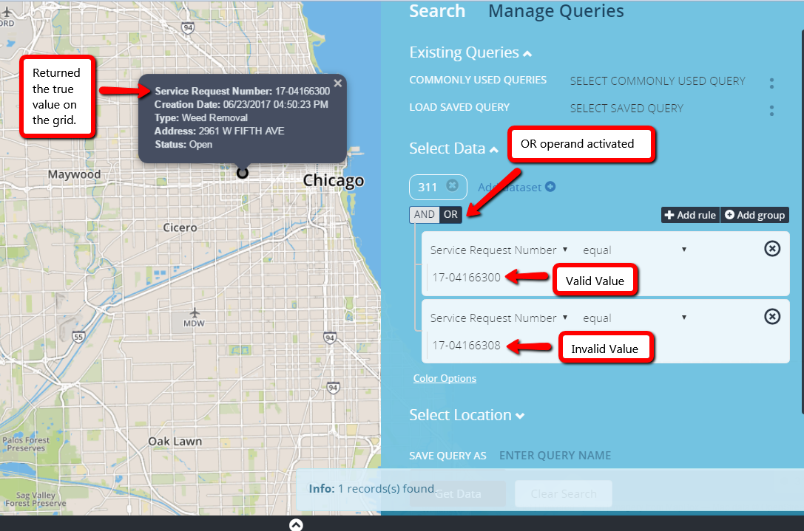
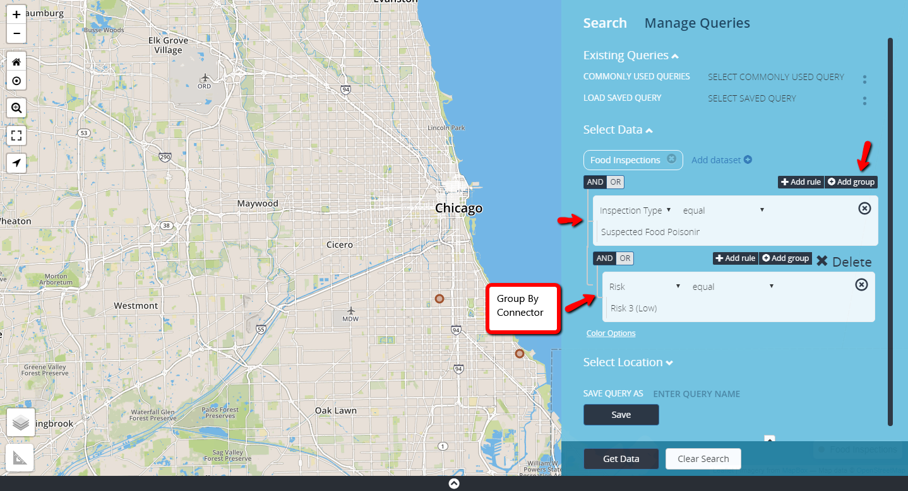

Advanced Filtering
There are multiple ways to filter for the exact data that you need. You can specify multiple criteria to find data and then choose whether all of those criteria need to be met or only one criteria. For instance, you can request all 311 calls that were completed by the city and were reported more than a week ago. Likewise, you can find 311 calls that were completed by the city or were reported more than a week ago.

Operator Connector
Match all conditions

"AND" Operand
Match any condition

"OR" Operand
Grouping Filters

Add Group